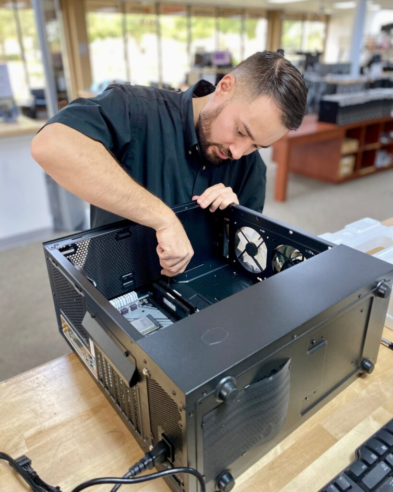

DOESN'T IT JUST WORK?
Ian Caldewell, a self-styled 'PC tinkerer', refurbishes PCs, and has ways of acquiring modems, monitors, CPUs, boxes and RAM - to the point where it has become a pastime consuming most of his leisure time. He now has streams of people seeking repairs, advice and assistance.
"Recently, I replaced an old power supply for a couple, and, when they came to collect, they asked whether I made house calls.
I said I could and asked what they needed."
The lady told Caldewell she'd bought a new wireless mouse, and, since it was the last one on display, it didn't come with a box or instructions.
"I asked her: 'Did you put batteries in it?!'
She hadn't, of course."